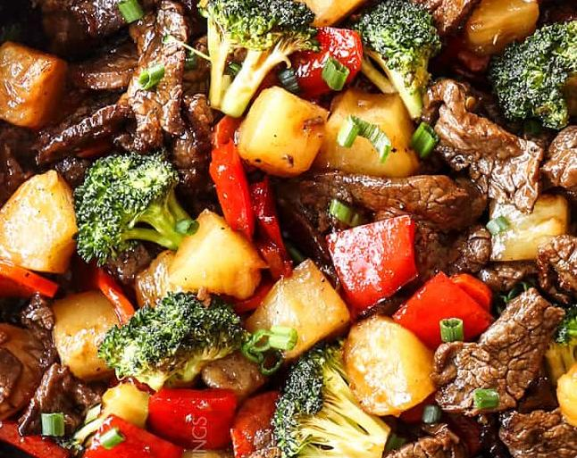

Hoisin-Teriyaki Stir Fry

A blend of sweet and savory sauces complements lean strips of beef and fresh veggies.
Ingredients
- 1 package beef strips
- 1 small yellow onion
- 1 large stalk celery
- 1 large carrot, julienned
- 1 small red bell pepper, chopped
- 4 cloves garlic, peeled and chopped
- 1/2 cup chopped white mushrooms
- 3/4 cup hoisin sauce
- 1/2 cup teriyaki sauce
- salt and pepper to taste
- steamed short-grain white rice (prepare to your liking)
Steps
- Preheat a large frying pan on medium heat, add 4tbsp of your preferred cooking oil.
- Add meat, season with salt and black pepper, and cook until meat is slightly browned.
- Add onions and sautee until translucent, taking care not to burn.
- Add peppers, celery, carrots, garlic, and mushrooms, cook while stirring about 2 minutes.
- Add sauces and cook until veggies have softened (usually about 5-10 minutes).
- Serve over steamed white rice. Sesame seeds can be used as an optional garnish.
Home